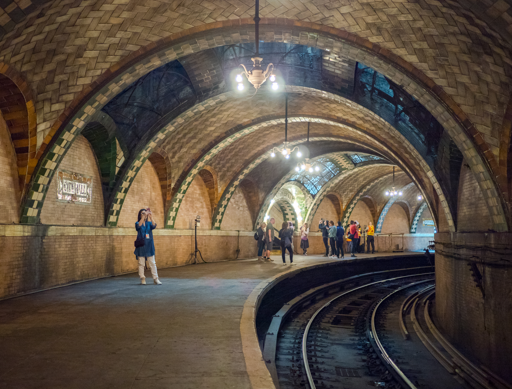
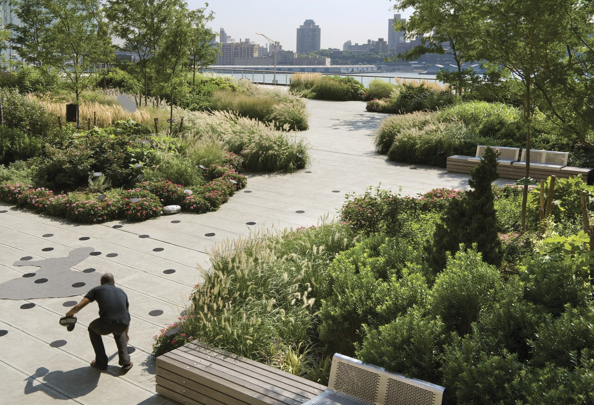
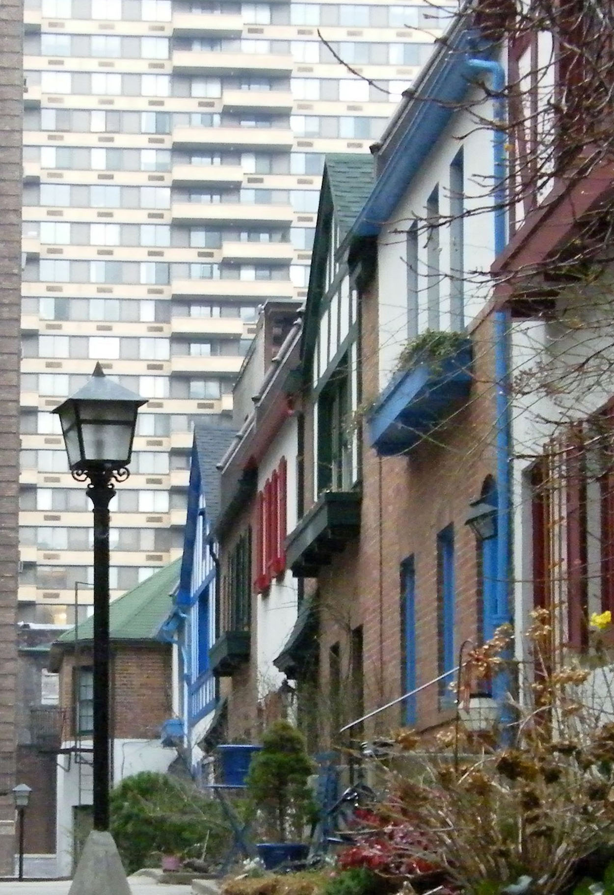
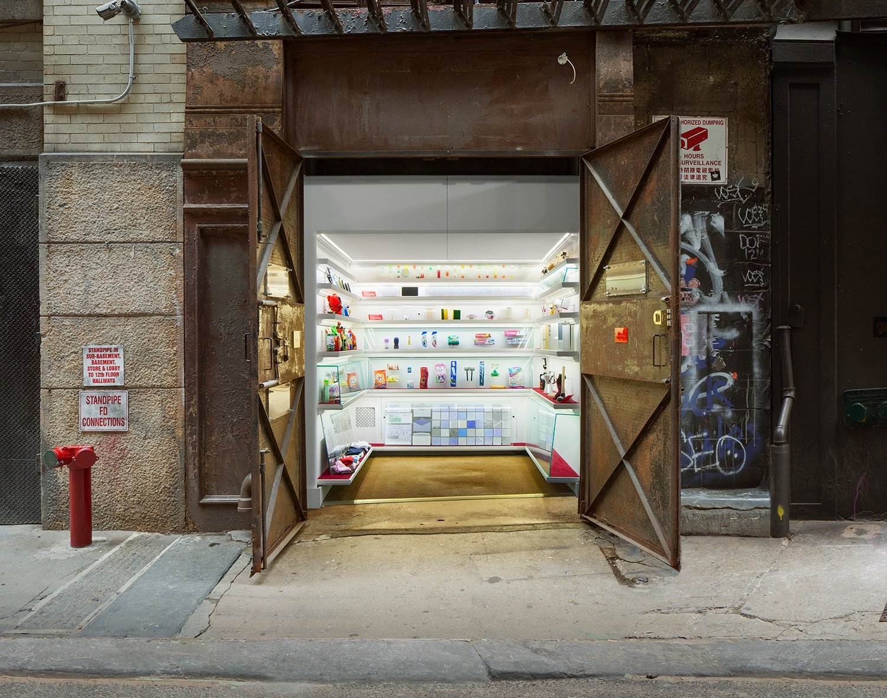

Step beyond the tourist trail and uncover the city’s secret landmarks full of charm, history, and wonder.
Hidden in plain sight on Roosevelt Island, this gothic ruin tells tales of a forgotten medical history. Built in the 1850s, it once served smallpox patients in isolation. Now overgrown and hauntingly beautiful, it’s a relic of early NYC healthcare tucked between Manhattan’s glitz and Queens’ quiet.

Beneath the busy streets of Manhattan lies an architectural time capsule. This now-abandoned subway station opened in 1904 and dazzles with chandeliers, curved glass tiles, and Romanesque arches. Though closed to passengers in 1945, you can still glimpse it on the 6 train loop — a true underground gem.

Tucked between skyscrapers in the Financial District, this hidden rooftop park feels like a secret garden in the sky. With a sprawling lawn, panoramic East River views, and modern art installations, the Elevated Acre is the perfect spot to escape the city without ever leaving it.
Far more than a burial ground, Green-Wood is a serene blend of history, art, and nature in Brooklyn. With rolling hills, historic mausoleums, and the graves of Civil War generals and artists, this National Historic Landmark feels like a peaceful outdoor museum — and offers one of the best skyline views in the city.

Hidden behind nondescript gates on the Upper West Side, Pomander Walk is a private street of quaint, colorful Tudor-style homes. Built in 1921, it feels like stepping into a storybook village — a charming and surreal pocket of whimsy among Manhattan’s concrete jungle.

Nestled inside a freight elevator shaft in a Tribeca alley, Mmuseumm is NYC’s tiniest museum with the biggest curiosity. Exhibiting oddities like toothpaste tubes from around the world or failed consumer products, it celebrates the beauty of everyday life in the most unexpected way.